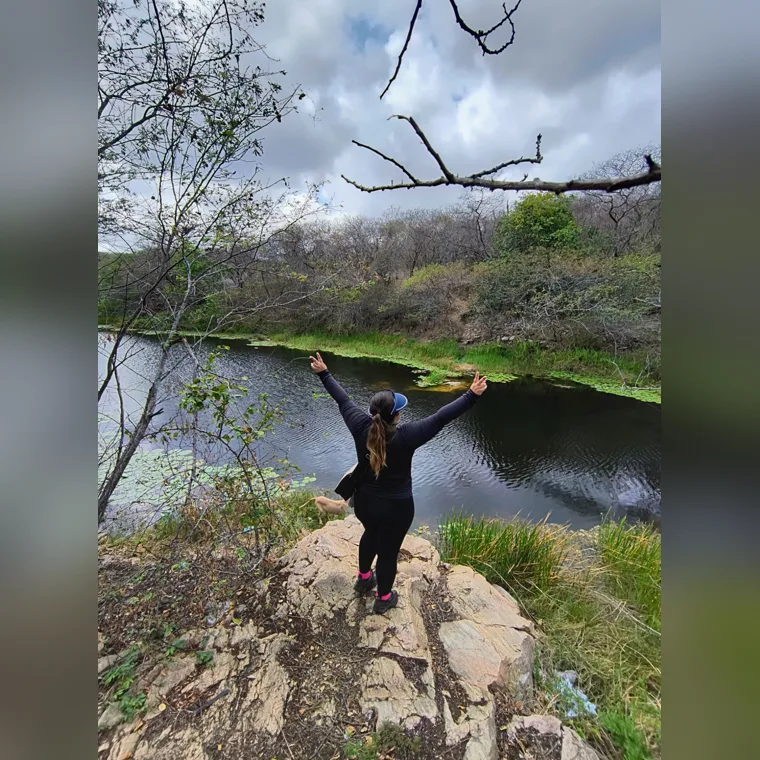
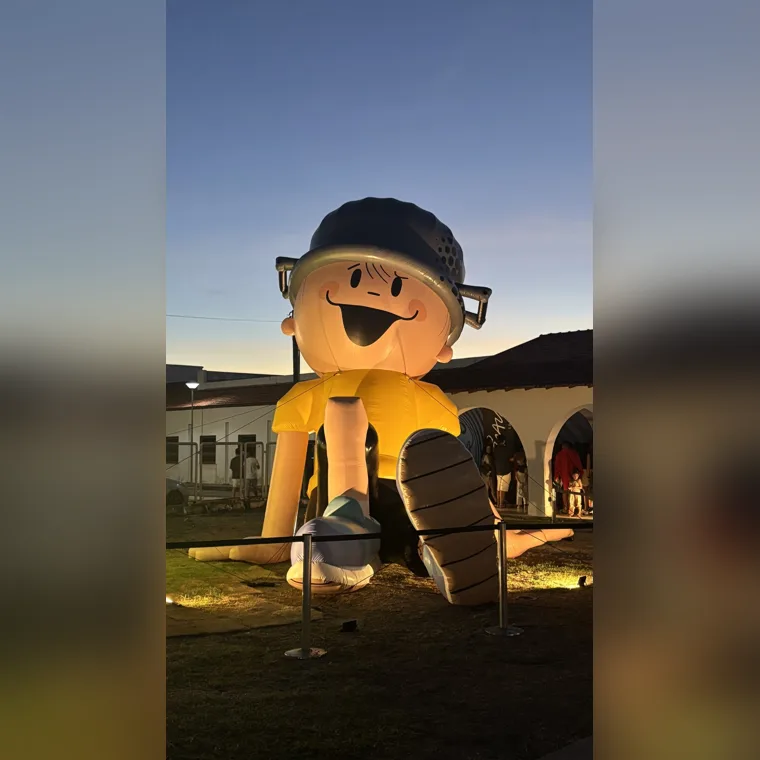

PUCRS
Pós-graduação | User Experience Design and Beyond
Conclusão prevista: dez. 2026
PORTFÓLIO PROFISSIONAL · PEOPLE ANALYTICS & BI
Transformando informações em insights para apoiar a tomada de decisão. Explore os projetos ao lado e conheça as análises, metodologias e soluções apresentadas.
* Os projetos utilizam dados fictícios.
PEOPLE ANALYTICS / BUSINESS INTELLIGENCE / ANÁLISE DE DADOS
01 / SOBRE MIM


Muito prazer, me chamo Antônia Brito!
Sou uma pessoa curiosa por natureza. Adoro descobrir coisas novas, explorar lugares diferentes e colecionar boas histórias pelo caminho.
Seja em uma trilha, nas páginas de um livro, apreciando o pôr do sol ou conhecendo uma exposição, estou sempre em busca de algo que desperte minha curiosidade.
E, claro, também adoro descobrir cafés superfaturados por aí, porque um bom café e uma boa conversa sempre têm seu valor (rs).
Tenho um doguinho chamado Thor, meu companheiro de rotina e de muitas aventuras.
Gosto de aprender, explorar e encontrar beleza nas coisas simples. Acho que é essa curiosidade que me move e faz de cada descoberta uma nova história para contar.
02 / FORMAÇÃO
Conclusão prevista: dez. 2026
Concluído
03 / EXPERIÊNCIAS
Uma trajetória construída conectando conhecimento operacional, planejamento e análise de dados para apoiar decisões de negócio.
Planejamento de força de trabalho, projeções de headcount, dimensionamento de equipes, forecast e análise de custos e produtividade.
Dashboards em Power BI, tratamento de dados com SQL e Databricks, monitoramento de KPIs e análises diagnósticas.
Relatórios e dashboards, consolidação de bases, acompanhamento de indicadores e SLAs e alinhamento com áreas de negócio.
Organização de bases, manutenção de relatórios gerenciais, acompanhamento de SLAs e apoio à gestão de demandas.
Atuação em atendimento, cobrança, qualidade, backoffice e suporte às lojas; experiência temporária como supervisora interina.
04 / PROJETOS
Transformando dados em estratégia para apoiar decisões e gerar valor ao negócio.
Forecast mensal de headcount e orçamento, com dimensionamento de horas produtivas, projeção de custos de pessoal e controle de desvios.
Monitoramento D-1 das horas produtivas e perdidas, com análise intraday de aderência, ponto, justificativas e abonos, comparando absenteísmo real e justificado.
Conheça Pareto, Ishikawa e 5W2H aplicados ao dimensionamento de escalas e à eficiência operacional.
Explore cada estudo de caso e amplie as imagens para ver os detalhes das análises.
BUSINESS INTELLIGENCE
Objetivo: Consolidar Headcount e custos de pessoal para apoiar decisões orçamentárias.
Metodologia: Análise diagnóstica e projeção por médias móveis.
Ferramentas: Power BI | SQL | Databricks | Figma (tecnologias propostas)
Análise: Identificar desvios financeiros e seus impactos por diretoria.
Resultado e aprendizado: Demonstrar como a análise integrada apoia a previsibilidade financeira.
PEOPLE ANALYTICS · DEMONSTRATIVO
Objetivo: Monitorar o absenteísmo e os ajustes de ponto.
Metodologia: Consolidar horas previstas, trabalhadas e ausentes, com projeção mensal.
Ferramentas: Power BI | SQL | WFM | Figma (tecnologias propostas).
Análise: Comparar ABS real e abonado, meta de 8% e desvios por área.
Resultado e aprendizado: Identificar áreas críticas e apoiar a gestão da jornada.
PEOPLE ANALYTICS · ESTUDOS DEMONSTRATIVOS
Identificar onde concentrar os esforços de investigação em dimensionamento de escalas e eficiência operacional.
Aplicação: Estudos ilustrativos de análise, diagnóstico e planejamento de ações, sem dados corporativos reais.
Explorar Pareto ↗05 / CONTATO
Vamos nos conectar? Encontre-me nos canais abaixo.